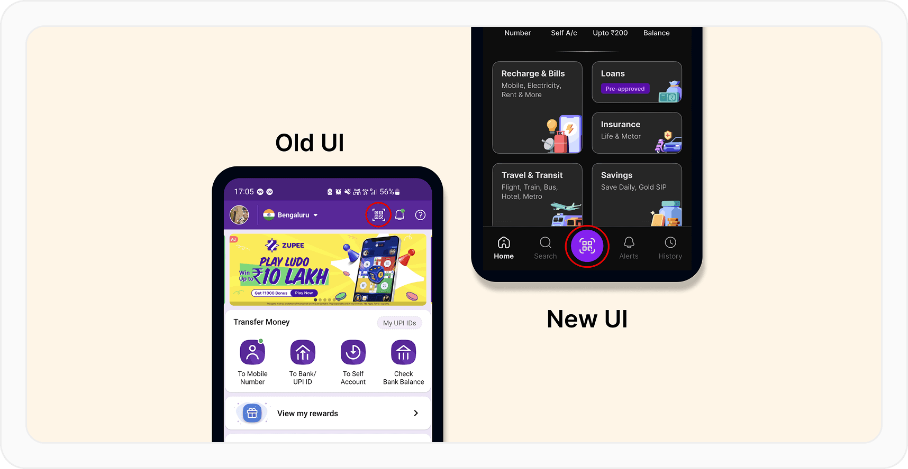
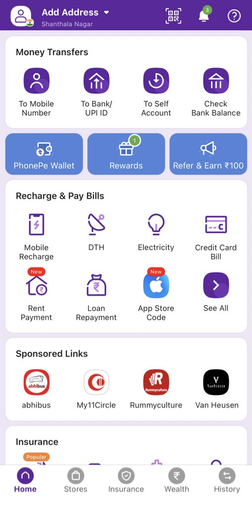
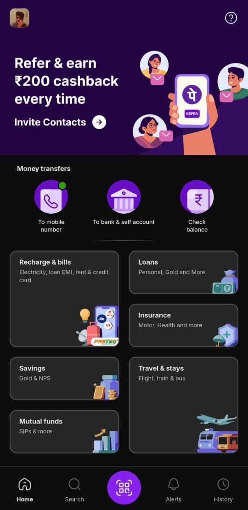
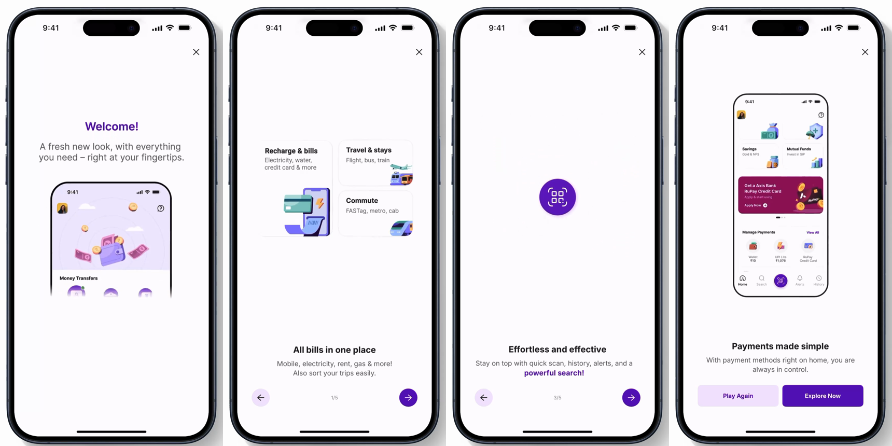
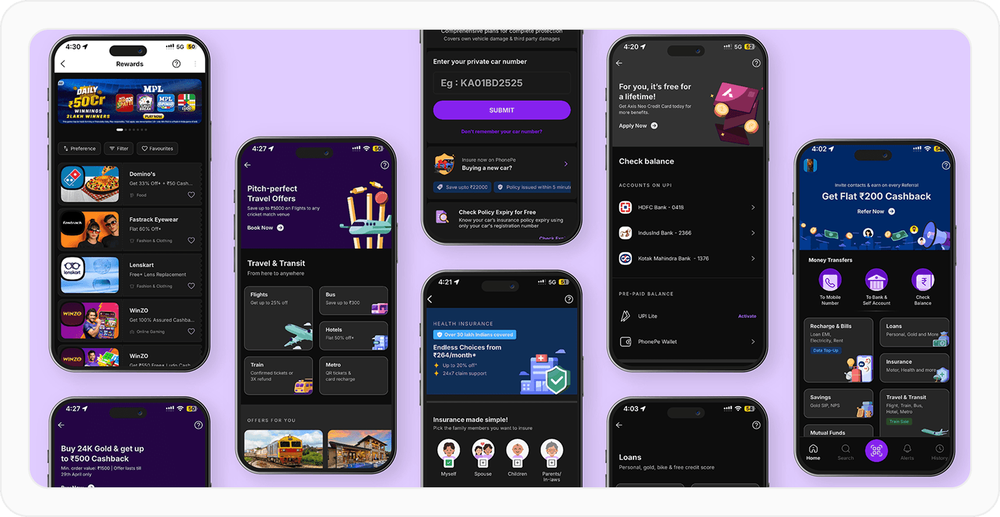

Case study 5 · PhonePe · visual study
PhonePe: redesign 800 screens without breaking trust
India’s biggest UPI app (61 crore+ users, its own number) redesigned in 2025. PhonePe’s design team explains what moved, what stayed and why. The clearest move: the QR scanner went from a small top icon to a big button under your thumb.
- A
- Controlled test (A/B, holdback)
- B
- Insider number, no method given
- C
- Expert analysis, no data
- D
- Dated, news or unverifiable
PhonePe Design · their own before / after
The scanner moved from a small top icon to under your thumb C

12- 1Old: the scanner was the small icon at the top right (red circle), the hardest place to reach with one hand.
- 2New: a big scanner button (red circle) in the middle of the bottom bar, in the “thumb zone”.
PhonePe’s reason: scanning happens in a hurry, paying a taxi driver or at a grocery counter. So it moved to where the thumb already is. They add that many users had already put the scanner on their phone’s home screen as a widget.
our note This is the same problem as our Idea 001: at the counter, the scanner is the whole app. PhonePe made it easier to reach; Idea 001 goes one step further and makes it the first thing you see.
Evidence PhonePe’s own design story and their own image. Reasoning only, no numbers on scan speed or use (C). PhonePe Design, “Move fast, don’t break trust”
Old vs new home · same app, 2025
Home went from icon grids to a few clear groups C


What stayed on top: send to a mobile number, send to a bank or your own account, check balance. These are the daily actions, so PhonePe kept them where people expect them. Everything else moved into a few named groups (Recharge & bills, Loans, Insurance, Savings, Travel, Mutual funds) instead of grids of small icons.
our note An honest catch: the new home still opens with a big “Refer & earn” banner above the money buttons. The groups are calmer, but the top of the screen still goes to promotion, not to you.
Evidence Screens from a PM’s Substack post. The post itself is opinion, with no data (C). Sid Arora, “PhonePe Fixed What Wasn’t Broken”, 13 Jun 2025
PhonePe Design · change management
Even a better flow feels worse if it breaks a habit C

1234- 1“A fresh new look, with everything you need.” Said first, before anything changes.
- 2Shows where the bills went, so nobody hunts for them.
- 3Points at the new scanner button on its own.
- 4Ends on “Payments made simple… you are always in control”.
PhonePe’s key line: people tap without reading, from muscle memory, so “even objectively better flows could feel worse if they break those anchors.” For money, a moved button can feel like an error. Their example is fearing a ₹5,000 mistake.
So they added steps to bridge the change: a release note (“still the app you trust”), this onboarding for new and existing users, and small in-app nudges for new features.
our note Monzo measured the same thing: people take about two weeks to get used to a new home screen (Monzo, step 6). PhonePe designed for it but published no measurement.
Evidence PhonePe’s own story; onboarding frames from 60fps.design. No test results (C). PhonePe Design story + 60fps.design
PhonePe Design · the business shift
From “get it done” payments to a money app C

Most people saw PhonePe as a payments tool used in “get it done” mode. The business wants it to be where you spend, manage and grow money. PhonePe says it tried to show a service at a natural next step, for example after paying school fees, not push every service at every user.
our note This is the tension in the whole redesign: the user opens the app to pay in five seconds, and the business wants them to stay. Steps 1 and 2 protect the five seconds; step 4 is about everything around them.
Evidence PhonePe’s stated intent and own images. No numbers on discovery or use (C). PhonePe Design story
Honest gap
What we couldn’t find
No outcome numbers anywhere. PhonePe gives scale (61 crore+ users, 34+ crore transactions a day, 200+ designers and engineers, 800+ screens, as of 31 Mar 2025) but no before/after on scan time, errors or use. No research method is named beyond “users’ feedback”. The page’s date is unclear: the byline says 10 Sep 2025, the page data says Oct 2026. The Substack’s “500M users divided” has no source, so we don’t use it.
Where the screens come from
- Scanner before/after, screen collage and reasoning: Move fast, don’t break trust (PhonePe Design, no author named).
- Old and new home screens: PhonePe Fixed What Wasn’t Broken (And Users Are Mad) (Sid Arora, 13 Jun 2025).
- Onboarding frames: PhonePe intro onboarding on 60fps.design, linked from PhonePe’s story.
- All images are from those pages. Pins and notes are ours.